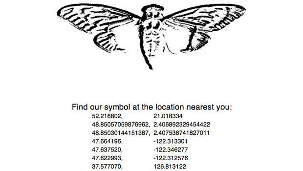
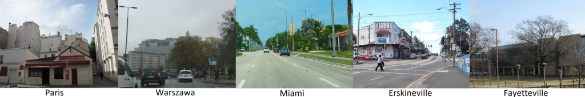
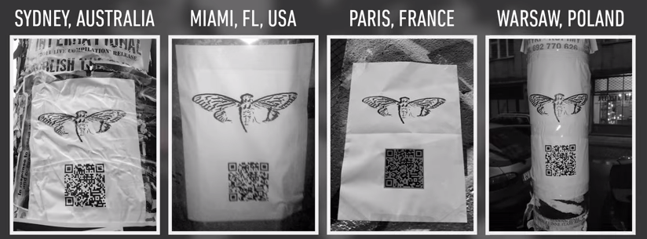
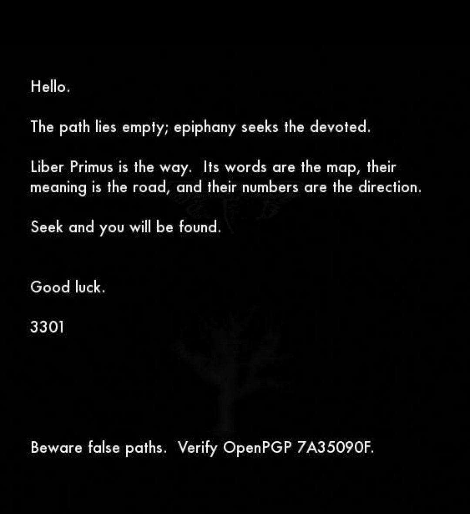
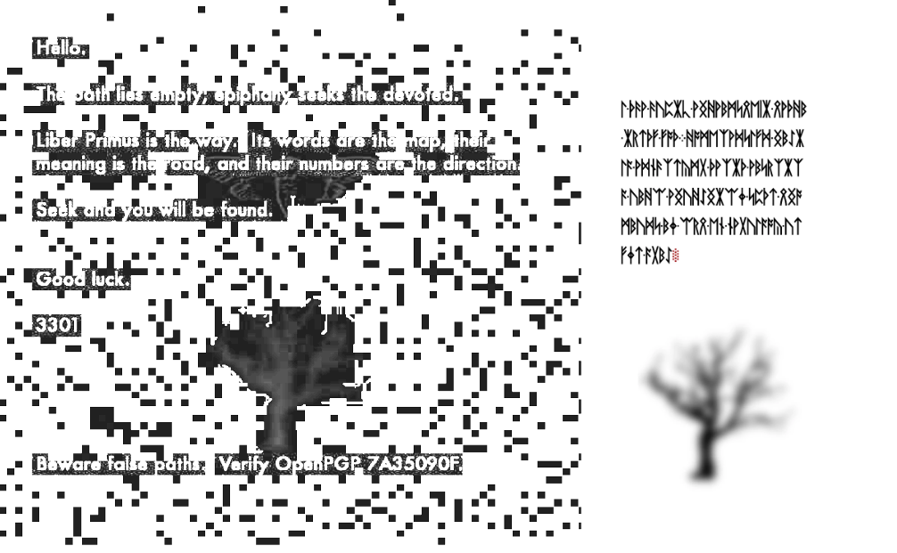
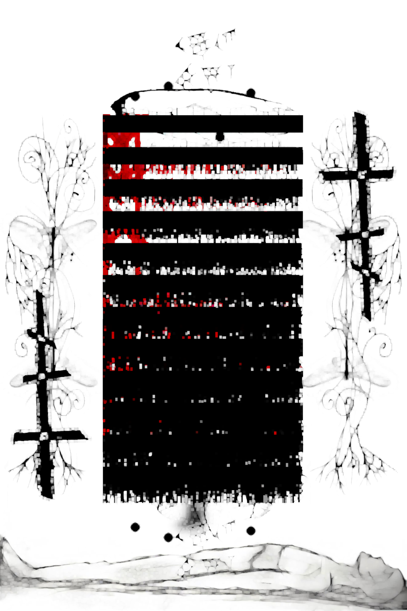
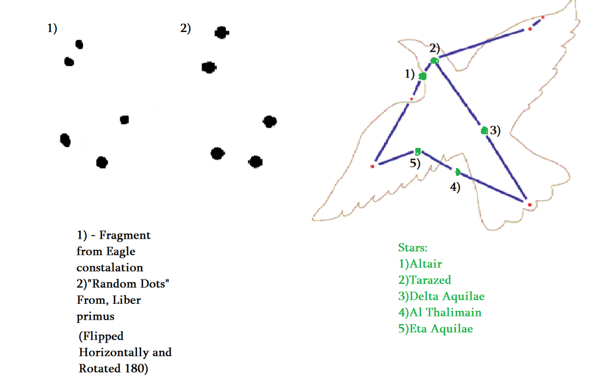
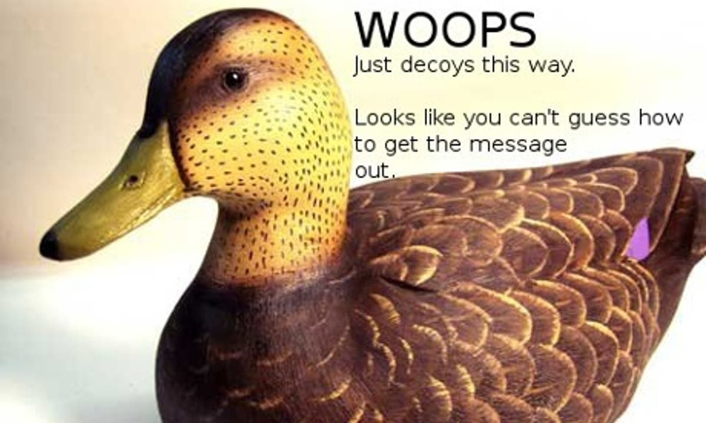

page 1

page 2

page 3

Cicada 3301 is a nickname given to an alleged enigmatic organization that posted three sets of puzzles online between 2012 and 2014.
The first Internet puzzle started on January 4, 2012, on 4chan and ran for nearly a month. A second round began one year later on January 4, 2013, and then a third round following the confirmation of a fresh clue posted on Twitter on January 4, 2014.The third puzzle has yet to be solved. The stated intent was to recruit individuals
by presenting a series of puzzles which were to be solved. No new puzzles were published on January 4, 2015 . However, a new clue was posted on Twitter on January 5, 2016. Cicada 3301 posted their last verified PGP-signed message in April 2017, denying the validity of any unsigned puzzle.The puzzles focused heavily on data security, cryptography, steganography, and internet anonymity.
It has been called the most elaborate and mysterious puzzle of the internet age
and is listed as one of the top 5 eeriest, unsolved mysteries of the internet
by The Washington Post, and much speculation exists as to its function. Many have speculated that the puzzles are a recruitment tool for the NSA, CIA, MI6, a Masonic conspiracy
or a cyber mercenary group. Others have claimed Cicada 3301 is an alternate reality game, although no company or individual has attempted to monetize it.
The stated purpose of the puzzles each year was to recruit "highly intelligent individuals", although the ultimate purpose remains unknown.
Some claimed that Cicada 3301 is a secret society with the goal of improving cryptography, privacy and anonymity. Others claimed that Cicada 3301 is a cult or religion. According to statements of several people who won the 2012 puzzle, 3301 typically uses non-puzzle-based recruiting methods, but created the Cicada puzzles because they were looking for potential members with cryptography and computer security skills.
The Cicada 3301 clues spanned many different forms of communication media, including the internet, telephone, original music, bootable Linux CDs, digital images, physical paper signs, and pages of unpublished cryptic books written in runes. One book, titled Liber Primus, literally "first book", contains many pages, only some of which have been decrypted. More information on which pages were solved, and how can be found on the official Cicada 3301 wiki. In addition to using many varying techniques to encrypt, encode, or hide data, these clues also referenced a wide variety of books, poetry, artwork and music. Each clue was signed by the same OpenPGP private key to confirm authenticity
Start of the 2nd puzzle published by Cicada 3301
places solved by users
each solved place ended up with Qr code poster
The first puzzle, of 2012, was solved by Marcus Wanner. According to him, those who solved the puzzles were asked questions about their support of information freedom, online privacy and freedom, and rejection of censorship. Those who answered satisfactorily at this stage were invited to a private forum, where they were instructed to devise and complete a project intended to further the ideals of the group.He did not finish his work on a method of general decryption and the website was removed.

As the group gained notoriety and public attention, many asserted that the puzzles were an introduction to occult principles, and possibly even recruitment for a cult. Conspiracy theorist Tim Dailey, a former senior research fellow with the conservative Christian Family Research Council, analyzed Cicada 3301 puzzles and stated, "The enigmatic Cicada 3301 appears to be drawing participants inexorably into the dark web of the occult à la Blavatsky and Crowley. At the heart of the enchantment is the counterfeit promise of ultimate meaning through self-divination." Others claimed that the Cicada 3301 puzzles are a modern and technological equivalent to the enlightenment journey within Western esotericism and mystery schools
3rd puzzle was also found by decrypting a another puzzle .
decrypted version
puzzle consisted of 4 poster and through this day it is still not solved

Cicada 3301 also published a book called Liber Primus . it contains 20 pages . 16 of the pages are solved but still theres more than solving cryptic language written on the pages .
one of them is hidden on book cover
solveing image shows the golden ratio of Fibonacci
.png)
Stacking all pages on top of each other reveals dead body infront of book shelf
some pages has random dots . connecting them together reveals eagle star constalation

more about Liber Primus and it is pages on Cicada 3301 fandom
documentary about Cicada 3301 on Youtube called Cicada 3301: An Internet Mystery
Music written for Cicada 3301 LEMMiNO - Cipher (BGM)
,+++77777++=:, += ,,++=7++=,, 7~?7 +7I77 :,I777 I 77 7+77 7: ,?777777??~,=+=~I7?,=77 I =7I7I~7 ,77: ++:~+777777 7 +77=7 =7I7 ,I777= 77,:~7 +?7, ~7 ~ 777? 77+7I 777~,,=7~ ,::7=7: 7 77 77: 7 7 +77,7 I777~+777I= =:,77,77 77 7,777, = 7 ?7 , 7~,~ + 77 ?: :?777 +~77 77? I7777I7I7 777+77 =:, ?7 +7 777? 77 ~I == ~77=77777~: I,+77? 7 7:?7? ?7 7 7 77 ~I 7I,,?7 I77~ I 7=77~+77+?=:I+~77? , I 7? 77 7 777~ +7 I+?7 +7~?777,77I =77 77= +7 7777 ,7 7?7:,??7 +7 7 77??+ 7777, =I, I 7+:77? +7I7?7777 : :7 7 7I7I?77 ~ +7:77, ~ +7,::7 7
